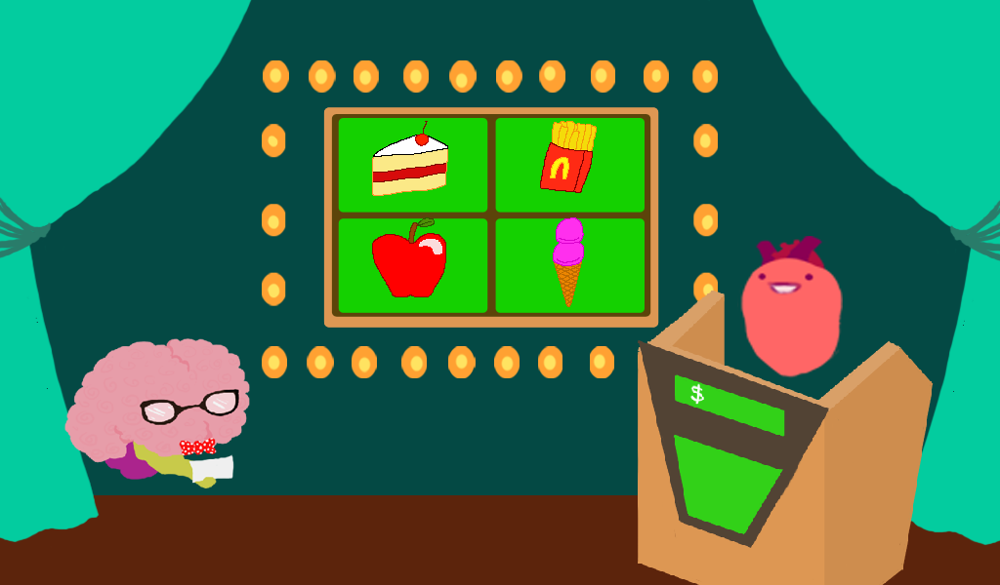
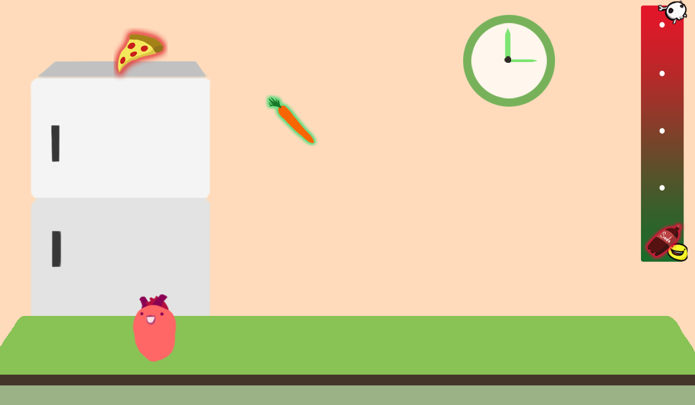
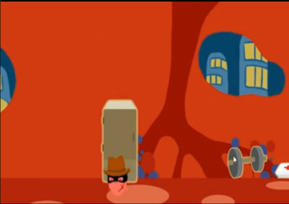

CardioCritters

During a Spring Game Jam, the Video Game Development Club was given the opportunity to develop a mobile game for the American Heart Association (AHA). The winner of the Game Jam would go on and be supported by AHA. CardioCritters, although Runner-Up, caught the attention of AHA and was also chosen to be supported by AHA.
AHA Criteria The American Heart Association gave the students the following criteria on how to develop the game 1. Game must be on a mobile platform
2. Raise Heart Disease Awareness
3. Promote a healthy lifestyle
4. Target a younger audience.
We decided on to develop an android game in which the user would take care of a pet heart. The idea was inspired by the Japanese toy, Tamagotchi. The user would be able to play with the heart in various minigames and dress up their heart to have accessories or clothes.
Features of Cardio Critters
Multiple Minigames, including a food quiz and a catch game
 And you could dress up your heart
You can view the Cardio Critter source code here!
Special Thanks
Unfortunately at the time we did not make a credits screen. But special thanks to Sophia Chang, Mariel Wong and Michelle Lim for supplying the art for this game.